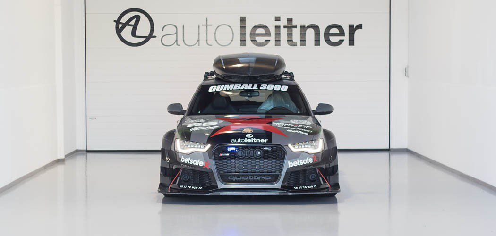
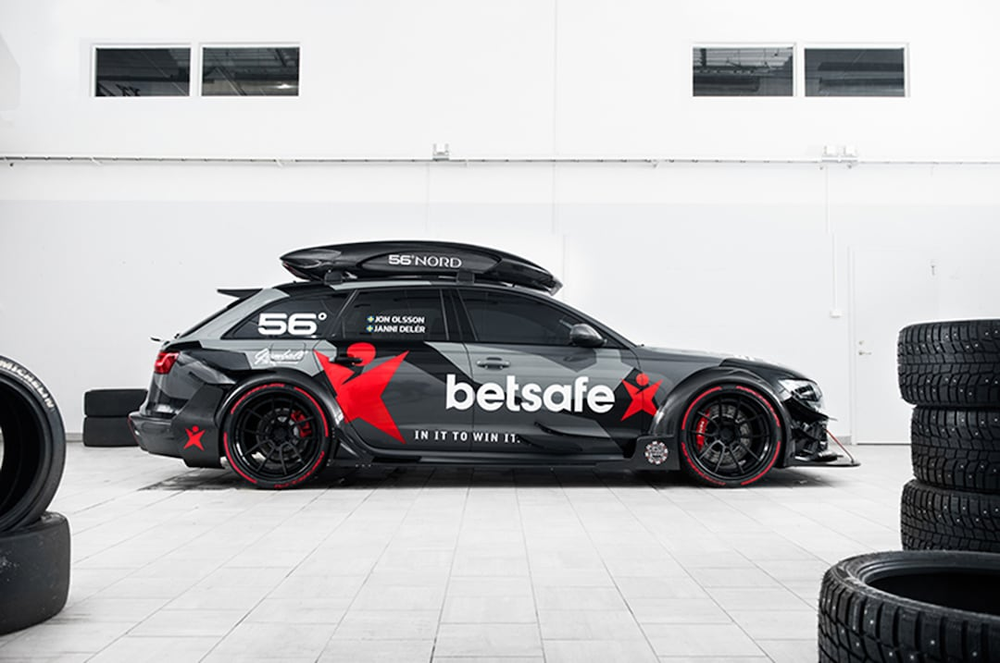

Mi az Audi RS6 DTM?


Az Audi RS6 DTM egy brutális teljesítményű, egyedi megjelenésű gépszörnyeteg, amit a híres síelő és autóőrült, Jon Olsson alakított át. A karosszéria szélesített, a festés kamuflázs mintás, a kipufogórendszer pedig durvább, mint egy metálkoncert közepén egy turbófeltöltő.
Ha érdekel az eredeti projekt története, nézd meg a Motor1 cikkét itt.